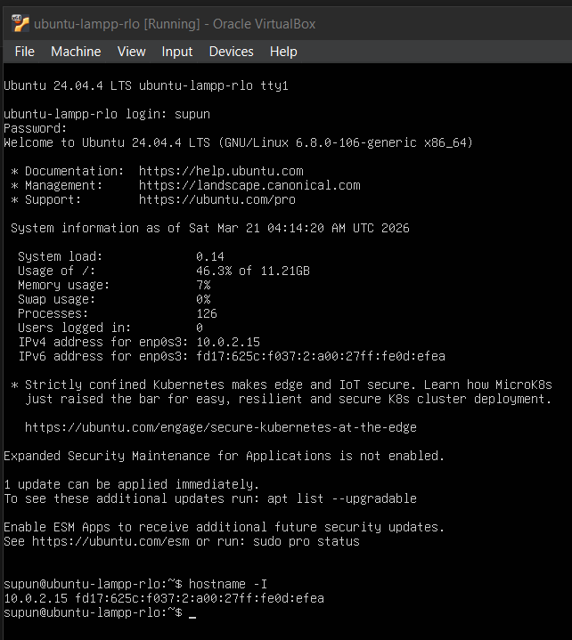
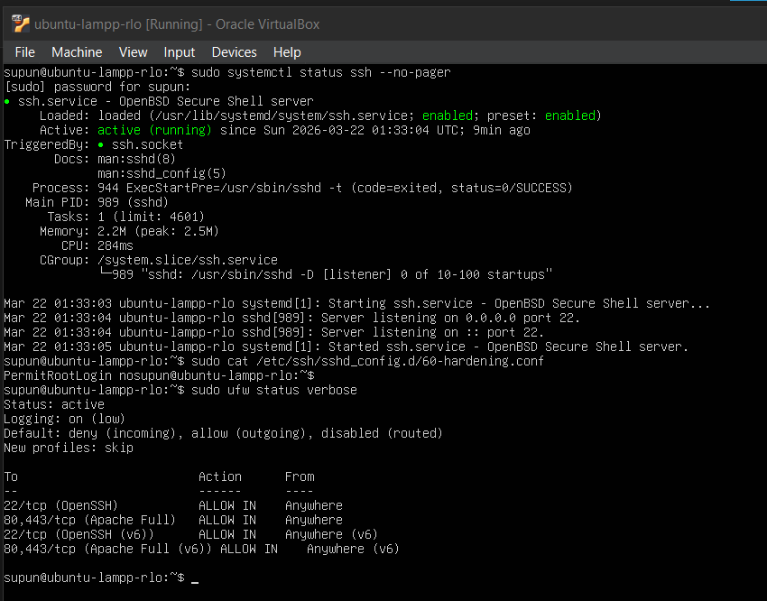
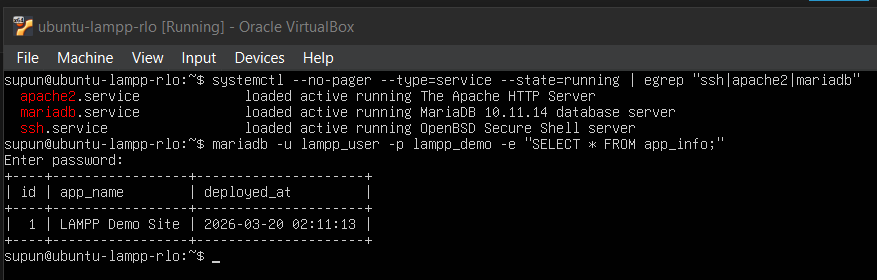
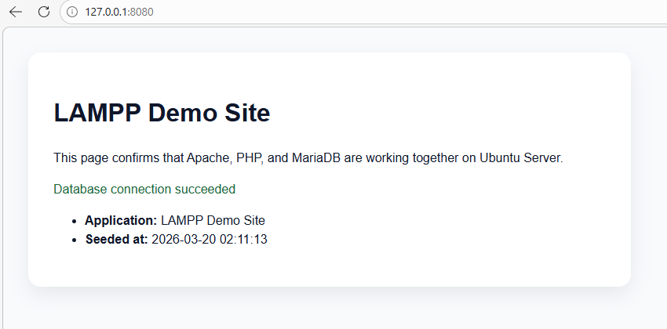
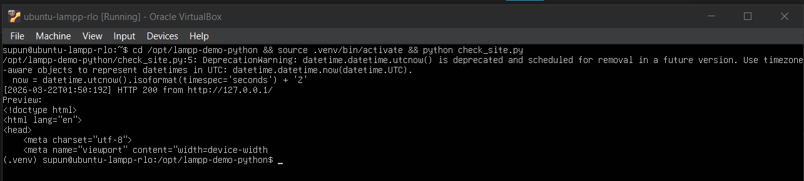

Hands-on module
Module 8: Final Validation and Evidence Package
Confirm that every layer of the stack works and gather a clean evidence package.
Module progress
0 of 0 checkpoints completed
What you will complete
- Validate the entire stack from OS to application.
- Confirm the web, database, and automation layers still work together.
- Organize the full evidence package captured in Modules 1 to 7.
Steps
Run the full-stack validation sequence
Validate the environment from the bottom up. If a step fails, stop there and fix that layer first rather than skipping ahead. This makes troubleshooting faster and more systematic.
1. Confirm the operating system baseline
- Reboot the VM if needed and confirm Ubuntu reaches the normal login prompt.
- Log in with your non-root administrative account.
- Confirm the machine still has a valid IP address.
Display the current IP address
hostname -I
Baseline login and IP: After logging in, use hostname -Ito confirm that the VM still has a valid address before you continue with the remaining validation checks.
2. Confirm remote access and firewall state
- Check that the
sshservice is running.Check the SSH service statussudo systemctl status ssh --no-pager - Confirm your SSH hardening file still disables direct root login.
Review the SSH hardening file
sudo cat /etc/ssh/sshd_config.d/60-hardening.conf - Run
sudo ufw status verboseand verify the firewall is active.Check firewall statussudo ufw status verbose - Make sure both the OpenSSH and Apache rules are still present.

Remote access and firewall check: Confirm that ssh.serviceis active, the hardening file still containsPermitRootLogin no, and UFW still allows bothOpenSSHandApache Full.
3. Confirm the web and database services
- Check that Apache is running.
- Check that MariaDB is running.
Check key service status in one pass
systemctl --no-pager --type=service --state=running | egrep "ssh|apache2|mariadb" - Query the database as
lampp_userand confirm the seeded row is returned. After you run the command, MariaDB prompts for the password assigned tolampp_user.Test database access as the app usermariadb -u lampp_user -p lampp_demo -e "SELECT * FROM app_info;"
Services and database query: This check confirms that the key services are running and that the least-privilege MariaDB account can still return the seeded row from app_info.
4. Confirm the application layer
- Open
http://127.0.0.1:8080/in a browser. - Confirm the site loads without a PHP error or blank page.
- Confirm the page displays
Database connection succeeded. - Confirm the seeded application record is visible on the page.

Application page confirmed: A successful result shows the deployed site, the Database connection succeededmessage, and the seeded record returned from the database.
5. Confirm the automation layer
- Activate the Python virtual environment again.
- Run the health-check script from Module 7.
Run the Python health-check again
cd /opt/lampp-demo-python && source .venv/bin/activate && python check_site.py
Automation check: The health-check script should still return an HTTP 200response and an HTML preview from the deployed site while the virtual environment is active. - Confirm it prints an
HTTP 200response and a short HTML preview.
Export a clean evidence package
Prepare the full evidence package while the system is still running and verified. Use the screenshots and other evidence you captured as you completed Modules 1 to 7, then organize them clearly for submission.
1. Compile the full evidence captured in Modules 1 to 7
- Gather the screenshots and other evidence you captured while completing Modules 1 to 7.
- Use the Evidence to capture list in each earlier module as your checklist for what must be included.
- Submit the full set of required evidence from each module.
2. Rename the files consistently
- Use filenames that begin with the module number so the evidence matches the build order.
- If a module has multiple screenshots, keep them all and add a second number so the sequence stays clear.
- Using this naming pattern, the Module 1 evidence could be:
01-01-vm-summary.png01-02-install-complete.png01-03-login-success.png01-04-hostname-ip.png01-05-ping-ubuntu.png
3. Do a final quality check
- Compare your evidence folder against the evidence lists in Modules 1 to 7 and confirm that every required item is present.
- Open each screenshot and make sure the text is readable.
- Remove duplicate or blurry captures, but do not remove required evidence just because it is similar to another screenshot.
- Submit the organized evidence package as a zip file.